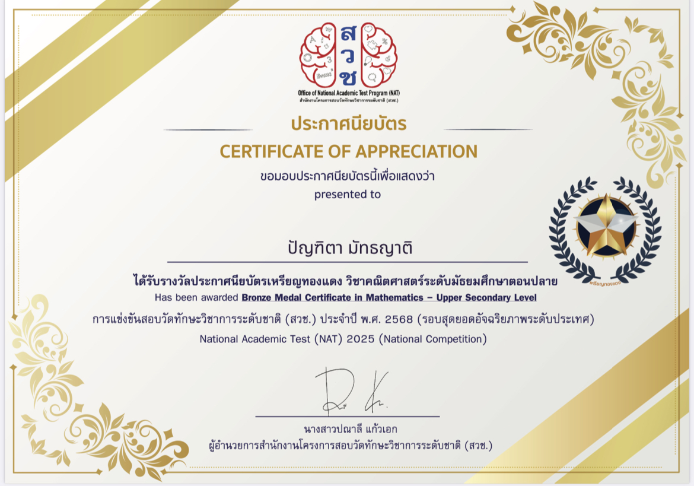
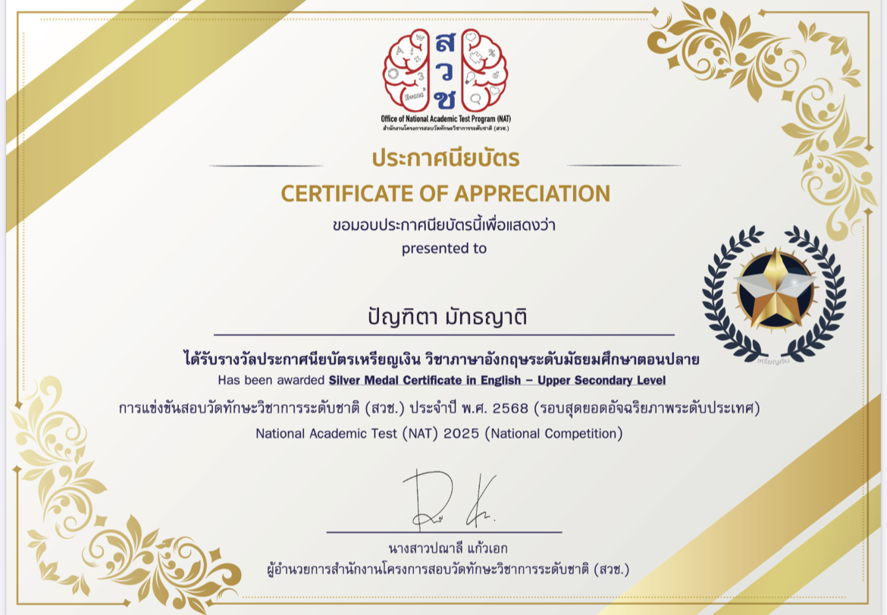
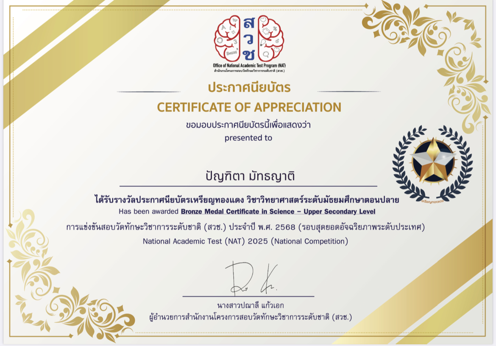

Your Name
ปัญฑิตา มัทธญาติ
About Me
ดิฉันเป็นนักเรียนมัธยมศึกษาปีที่6 สายการเรียนวิทยาศาสตร์สุขภาพ ดิฉันมีความสนใจด้านวิทยาศาสตร์ โดยเฉพาะชีววิทยาและการแพทย์ตั้งแต่ดิฉันเรียนอยู่ประถมศึกษาปีที่6 ความสนใจนี้ไม่ได้เกิดขึ้นเพียงเพราะชอบเรียนในห้องเรียนเพียงอย่างเดียว แต่เกิดจากความรู้สึกที่อยากเข้าใจร่างกายมนุษย์ เหตุผลของการเกิดโรค และวิธีที่ความรู้ทางการแพทย์สามารถเปลี่ยนแปลงชีวิตของผู้คนได้ ตลอดระยะเวลาที่ผ่านมา ดิฉันมุ่งมั่นพัฒนาตนเองทั้งด้านวิชาการและทักษะต่าง ๆ อย่างต่อเนื่อง ดิฉันเชื่อว่าความสำเร็จไม่ได้เกิดจากพรสวรรค์เพียงอย่างเดียว แต่เกิดจากความมีวินัย ความรับผิดชอบ และความพยายามที่สม่ำเสมอ ดิฉันจึงพยายามใช้ทุกโอกาสในการเรียนรู้ เปิดรับประสบการณ์ใหม่ ๆ และพัฒนาศักยภาพของตนเองอยู่เสมอ สำหรับดิฉันแล้ว การเป็นแพทย์ไม่ใช่เพียงอาชีพ แต่คือความรับผิดชอบที่ยิ่งใหญ่ต่อชีวิตของผู้อื่น เป็นวิชาชีพที่ต้องอาศัยทั้งความรู้ ความเมตตา ความอดทน และการเรียนรู้ตลอดชีวิต ดิฉันจึงตั้งใจเตรียมความพร้อมให้กับตนเองในทุกด้าน เพื่อก้าวไปสู่เป้าหมายนี้ด้วยความมุ่งมั่นและความตั้งใจอย่างแท้จริง ดิฉันหวังว่าสักวันหนึ่งจะสามารถนำความรู้ ความสามารถ และหัวใจของการเป็นผู้ให้ ไปดูแลผู้ป่วย สร้างคุณค่าให้กับสังคม และการเป็นแพทย์ที่ไม่เพียงรักษาโรค แต่ยังสร้างความหวังและกำลังใจให้กับผู้คนได้ในทุกช่วงเวลาของชีวิต
Education
อนุบาล1-3 โรงเรียนมิตรอุดม ประถมศึกษาปีที่1-มัธยมศึกษาปีที่6 โรงเรียนเซนต์โยเซฟทิพวัล
Skills
- แข่งขันคณิตศาสตร์โครงการสวช.ระดับจังหวัดได้คะแนนอันดับที่ 7 ของจังหวัดสมุทรปราการ และอันดับที่ 39 ของภูมิภาค
- แข่งขันคณิตศาสตร์โครงการสวช.ระดับประเทศได้คะแนนอันดับที่ 99 ของประเทศ
- แข่งขันวิทยาศาสตร์โครงการสวช.ระดับจังหวัดได้คะแนนอันดับที่ 1 ของจังหวัดสมุทรปราการ และอันดับที่ 15 ของภูมิภาค
- แข่งขันวิทยาศาสตร์โครงการสวช.ระดับประเทศได้คะแนนอันดับที่ 171 ของประเทศ
- แข่งขันภาษาอังกฤษโครงการสวช.ระดับจังหวัดได้คะแนนอันดับที่ 5 ของจังหวัดสมุทรปราการ และอันดับที่ 78 ของภูมิภาค
- แข่งขันภาษาอังกฤษโครงการสวช.ระดับประเทศได้คะแนนอันดับที่ 189 ของประเทศ
- เป็นหนึ่งในสมาชิกองค์กรพัฒนาเด็ก เยาวชน และสังคม
Projects
- โครงงานการผลิตถ่านหุงต้มจากกากไขมันและกากกาแฟ
- โครงงานสิ่งประดิษฐ์เครื่องกรองฝุ่นpm 2.5
- โครงงานนวัตกรรมการดูแลสุขภาพจิตเด็กและเยาวชน
Certificates



Contact
Email : zettmy141@gmail.com
Instagram : @zeqnuxq
GitHub : github.com/punpunii